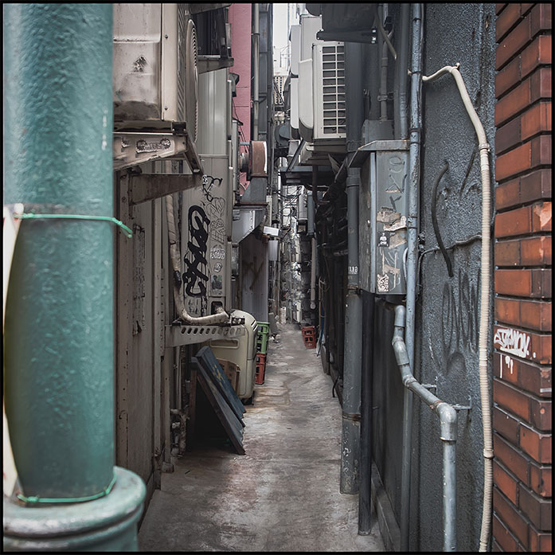

Hair Wall is a guerilla-style physical/electronic form of graffiti anthropomorphizing through biochronology the inanimate structures it attaches to. The piece is meant to fit seamless within the structure, through the use of compact motors and batteries to make the hair strand grow and components and matching construction materials to blend it into the wall, as if a scalp/follicle of cement or stucco.
Twenty minutes from activation (top right)
Three hours from activation